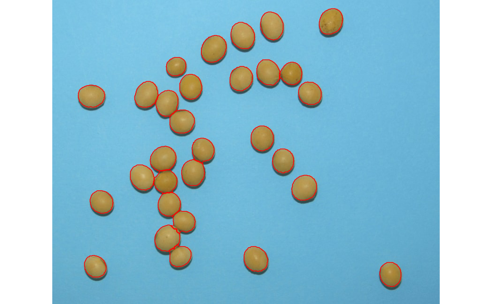

analyze_objects()provides tools for counting and extracting object features (e.g., area, perimeter, radius, pixel intensity) in an image. See more at Details section.plot.anal_obj()Produces an histogram for the R, G, and B values when argumentobject_indexis used in the functionanalyze_objects().
analyze_objects( img, foreground = NULL, background = NULL, pattern = NULL, img_pattern = NULL, parallel = FALSE, workers = NULL, watershed = TRUE, resize = FALSE, trim = FALSE, fill_hull = FALSE, filter = FALSE, invert = FALSE, object_size = "medium", index = "NB", my_index = NULL, object_index = NULL, threshold = "Otsu", tolerance = NULL, extension = NULL, lower_size = NULL, upper_size = NULL, topn_lower = NULL, topn_upper = NULL, lower_eccent = NULL, upper_eccent = NULL, randomize = TRUE, nrows = 2000, show_image = TRUE, show_original = TRUE, show_chull = FALSE, show_contour = TRUE, contour_col = "red", contour_size = 1, show_background = TRUE, show_segmentation = FALSE, col_foreground = NULL, col_background = NULL, marker = FALSE, marker_col = NULL, marker_size = NULL, save_image = FALSE, prefix = "proc_", dir_original = NULL, dir_processed = NULL, verbose = TRUE ) # S3 method for anal_obj plot(x, ...)
Arguments
| img | The image to be analyzed. |
|---|---|
| foreground | A color palette of the foreground (optional). |
| background | A color palette of the background (optional). |
| pattern | A pattern of file name used to identify images to be imported.
For example, if |
| img_pattern | Deprecated. Use |
| parallel | If |
| workers | A positive numeric scalar or a function specifying the number of parallel processes that can be active at the same time. By default, the number of sections is set up to 50% of available cores. |
| watershed | If |
| resize | Resize the image before processing? Defaults to |
| trim | Number of pixels removed from edges in the analysis. The edges of
images are often shaded, which can affect image analysis. The edges of
images can be removed by specifying the number of pixels. Defaults to
|
| fill_hull | Fill holes in the binary image? Defaults to |
| filter | Performs median filtering after image processing? defaults to
|
| invert | Inverts the binary image, if desired. This is useful to process
images with black background. Defaults to |
| object_size | The size of the object. Used to automatically set up
|
| index, my_index | A character value specifying the target mode for
conversion to binary image when |
| object_index | Defaults to |
| threshold | A numeric value for the segmentation threshold. By default, a threshold value based on Otsu's method is used to reduce the grayscale image to a binary image. |
| tolerance | The minimum height of the object in the units of image intensity between its highest point (seed) and the point where it contacts another object (checked for every contact pixel). If the height is smaller than the tolerance, the object will be combined with one of its neighbors, which is the highest. |
| extension | Radius of the neighborhood in pixels for the detection of neighboring objects. Higher value smooths out small objects. |
| lower_size, upper_size | Lower and upper limits for size for the image
analysis. Plant images often contain dirt and dust. To prevent dust from
affecting the image analysis, objects with lesser than 10% of the mean of
all objects are removed. Upper limit is set to |
| topn_lower, topn_upper | Select the top |
| lower_eccent, upper_eccent | Lower and upper limit for object
eccentricity for the image analysis. Users may use these arguments to
remove objects such as square papers for scale (low eccentricity) or cut
petioles (high eccentricity) from the images. Defaults to |
| randomize | Randomize the lines before training the model? |
| nrows | The number of lines to be used in training step. Defaults to 2000. |
| show_image | Show image after processing? |
| show_original | Show the count objects in the original image? |
| show_chull | Show the convex hull around the objects? Defaults to
|
| show_contour | Show a contour line around the objects? Defaults
to |
| contour_col, contour_size | The color and size for the contour line
around objects. Defaults to |
| show_background | Show the background? Defaults to |
| show_segmentation | Shows the object segmentation colored with random
permutations. Defaults to |
| col_foreground, col_background | Foreground and background color after
image processing. Defaults to |
| marker, marker_col, marker_size | The type, color and size of the object
marker. Defaults to |
| save_image | Save the image after processing? The image is saved in the
current working directory named as |
| prefix | The prefix to be included in the processed images. Defaults to
|
| dir_original, dir_processed | The directory containing the original and
processed images. Defaults to |
| verbose | If |
| x | An object of class |
| ... | Currently not used |
Value
analyze_objects() returns a list with the following objects:
resultsA data frame with the following variables for each object in the image:idobject identification.x,y, x and y coordinates for the center of mass of the object.area: area of the object (in pixels).area_ch: the area of the convex hull around object (in pixels).perimeter: perimeter (in pixels).radius_min,radius_mean, andradius_max: The minimum, mean, and maximum radius (in pixels), respectively.radius_sd: standard deviation of the mean radius (in pixels).radius_ratio: radius ratio given byradius_max / radius_min.major_axis: elliptical fit major axis (in pixels).eccentricity: elliptical eccentricity defined by sqrt(1-minoraxis^2/majoraxis^2). Circle eccentricity is 0 and straight line eccentricity is 1.theta: object angle (in radians).solidity: object solidity given byarea / area_ch.circularity: the object circularity given by \(4\*pi\*(area / perimeter^2)\).index: (whenobject_indexis declared) the index for pixel intensity of each object. By default, the mean value of B (blue).
statistics: A data frame with the summary statistics for the area of the objects.count: Ifpatternis used, shows the number of objects in each image.object_rgb: Ifobject_indexis used, returns the R, G, and B values for each pixel of each object.
plot.anal_obj() returns a trellis object containing the
distribution of the pixels for each object
Details
A binary image is first generated to segment the foreground and background.
The argument index is useful to choose a proper index to segment the image
(see image_binary() for more details). Then, the number of objects in the
foreground is counted. By setting up arguments such as lower_size,
upper_size it is possible to set a threshold for lower and upper sizes of
the objects, respectively. The argument object_size can be used to set up
pre-defined values of tolerance and extension depending on the image
resolution. This will influence the watershed-based object segmentation. Users
can also tune-up tolerance and extension explicitly to a better precision
of watershed segmentation.
If watershed = FALSE is used,
If color palettes samples are provided, a general linear model (binomial family) fitted to the RGB values is used to segment fore- and background.
By using pattern it is possible to process several images with common
pattern names that are stored in the current working directory or in the
subdirectory informed in dir_original'. To speed up the computation time,
one can set parallel = TRUE.
References
Gupta, S., Rosenthal, D. M., Stinchcombe, J. R., & Baucom, R. S. (2020). The remarkable morphological diversity of leaf shape in sweet potato (Ipomoea batatas): the influence of genetics, environment, and G×E. New Phytologist, 225(5), 2183–2195. doi: 10.1111/NPH.16286
Lee, Y., & Lim, W. (2017). Shoelace Formula: Connecting the Area of a Polygon and the Vector Cross Product. The Mathematics Teacher, 110(8), 631–636. doi: 10.5951/MATHTEACHER.110.8.0631
Author
Tiago Olivoto tiagoolivoto@gmail.com
Examples
obj$statistics#> stat value #> 1 n 30.0000 #> 2 min_area 1366.0000 #> 3 mean_area 2057.3667 #> 4 max_area 2445.0000 #> 5 sd_area 230.5574 #> 6 sum_area 61721.0000# Enumerate the objects in the original image # Return the top-5 grains with the largest area top <- analyze_objects(img, marker = "id", topn_upper = 5)top$results#> id x y area area_ch perimeter radius_mean radius_min #> 4 4 345.3566 105.78323 2445 2406 158 27.51343 24.68250 #> 11 11 468.9970 56.42549 2315 2275 155 26.76542 23.03064 #> 3 3 237.5917 339.82483 2312 2282 152 26.69878 23.96521 #> 5 5 406.9314 77.54909 2302 2264 153 26.64891 23.96546 #> 2 2 538.0561 401.89604 2299 2258 153 26.60716 24.95688 #> radius_max radius_sd radius_ratio major_axis eccentricity theta #> 4 30.47116 1.7303597 1.234525 60.92191 0.5443558 -0.9908157 #> 11 30.78003 2.3489729 1.336482 61.22955 0.6175840 1.2923197 #> 3 29.04402 1.2334610 1.211924 57.50966 0.4538087 -0.5715211 #> 5 29.63586 1.6395963 1.236607 58.85962 0.5325370 1.1444750 #> 2 28.40020 0.9346592 1.137971 56.60376 0.4058277 -0.8382015 #> solidity circularity #> 4 1.016209 1.230763 #> 11 1.017582 1.210870 #> 3 1.013146 1.257507 #> 5 1.016784 1.235755 #> 2 1.018158 1.234144# } # \donttest{ library(pliman) img <- image_pliman("soy_green.jpg") # Segment the foreground (grains) using the normalized blue index # Shows the average value of the blue index in each object rgb <- analyze_objects(img, index = "NB", # default object_index = "B")# }